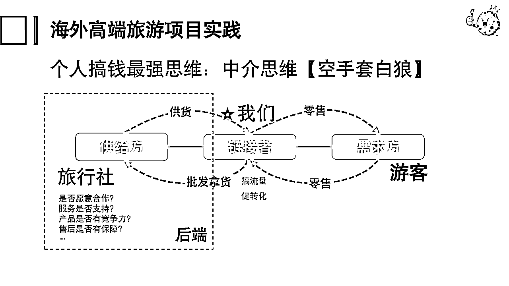
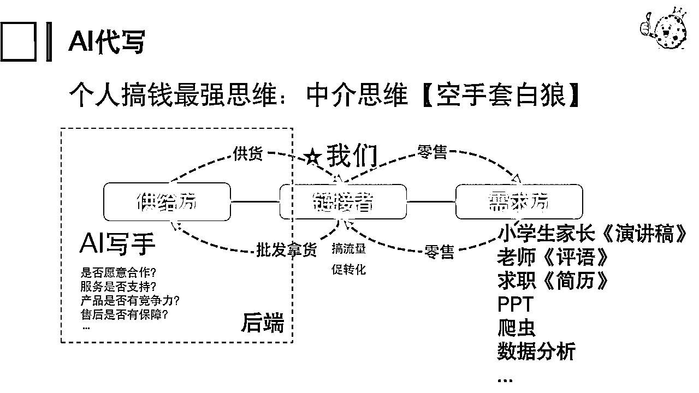
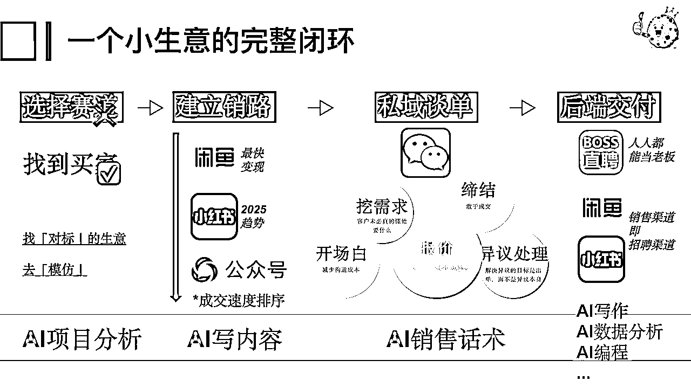
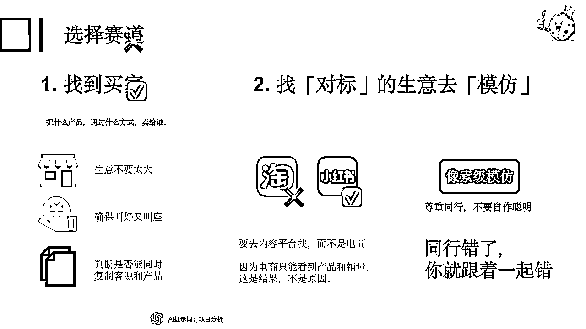
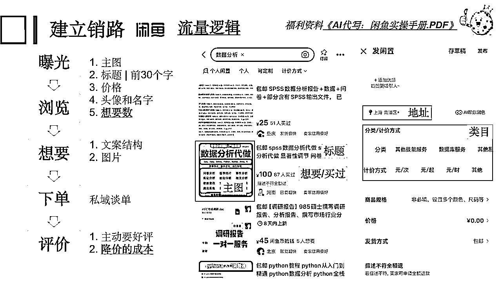
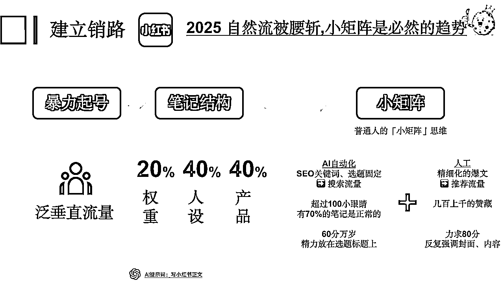
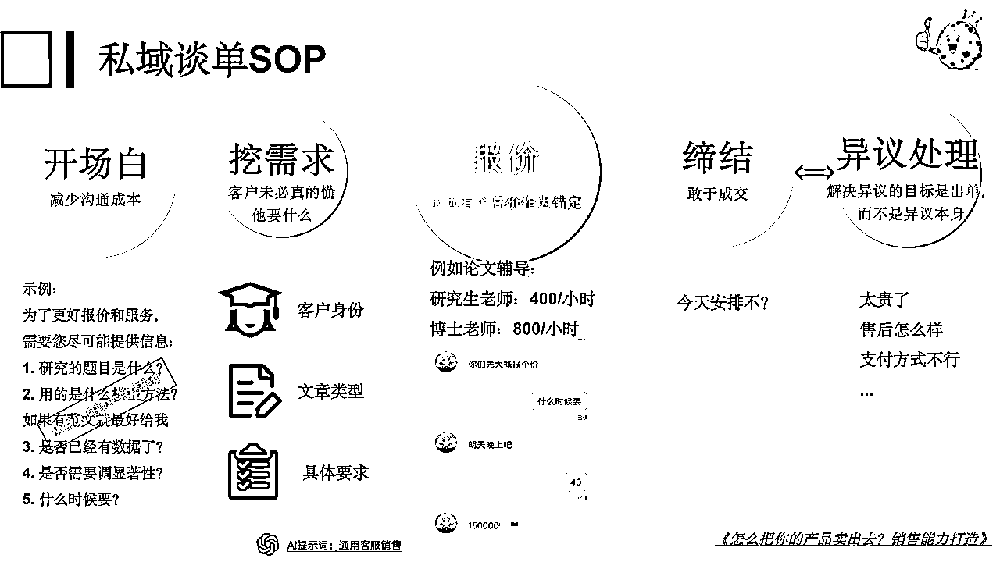
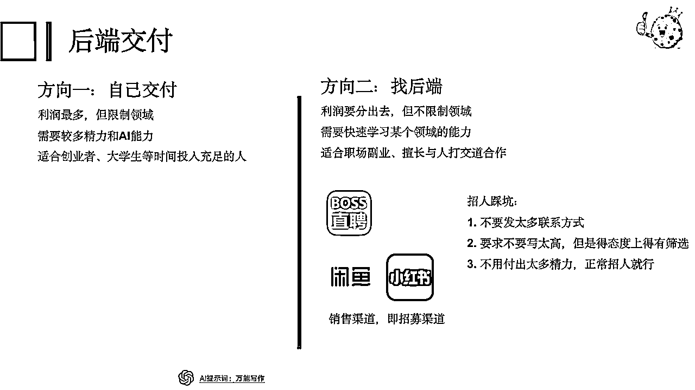

来源：https://ry6uq5vtyu.feishu.cn/docx/VRWOd0D61ocEZPxc7CrcQjvUnab
大家好我是饼干哥哥，今天跟大家聊一下中介思维，大家可以看到这个副标题：怎么在7天之内建立自己的生意并盈利
这个是我做ai代写的真实情况我记得第1周做咸鱼就开始接单变现。
虽然金额不是很多，几十元，但现在整个周期非常短能够快速的去验证这件事是否靠谱。
现在这个项目我也做了一年，已经有足够的经验来给大家做一个复盘。今天不是教大家怎么年入百万，反而是基于我过去的经验抽象出来的一些生意模型，分享一个小生意从0~1的完整闭环是怎么样的。
去年年初的时候就已经入局AI代写，只是刚开始的时候发现这个赛道客单很低，就转回自己熟悉的领域：数据分析，帮别人解决数据分析问题；虽然我自己本身就是数据分析师，但我副业时间有限，实际上我接到的需求是交给别人去做的。
这就是我今天要分享的逻辑「中介思维」——搞懂前端流量，学会私域谈单，这个逻辑是万能的，几乎什么项目都适用。


我已经按这个逻辑跑过演讲稿、简历、PPT、PowerBI、Python、网页开发、数据分析等不同赛道的需求了，任意一个赛道都值得深入去做高客单。
特别适合技能类的。你学会之后，结合自己的技能去做，或者外包给别人去，一个月赚几千不是问题。
这次分享是以「数据分析代做」为例，讲清楚中介思维的逻辑，帮助大家快速建立起自己的生意，并且快速盈利
我们先来看一看接下来要讲什么，这个逻辑就是一个生意的完整闭环，无论是大是小那一定要包括这些方面的内容。

首先是选择一条赛道你要做什么样的生意，对于还没有开展自己副业、自己项目的同学，这里是非常建议我们永远都要去做「对标」，去找到我们对标的生意去做像素级的模仿。
原因很简单，既然别人做这个生意已经拿到了结果、卖出去了产品，那我们复制它的路径，也很有可能能成功。
确定好赛道之后，我们就要建立起自己的销路，无非就是搞流量。例如很常见的小红书，虽然小红书很火但其实它并不是快能拿到结果的一个路径。
最快变现的是闲鱼，他就是一个做买卖的地方你去了就是卖你的产品、卖你的服务客户，用户进来也是只有买东西这一个目的。
而小红书是个内容平台大家可能在上面看自己感兴趣的内容所以在成交效率上没有那么高。
有了客户之后无论你是什么平台也一定是要引流到自己私域上去谈单那这个过程其实就是一个做客服做销售的过程。一个会谈单的人和不会谈单的人他们的收入很有可能会差到差不多10倍那么夸张。
比如我之前就请了一个客服帮我聊，有一次客户来咨询然后他报了一个价比方说700块那客户说太贵了不要了，这客服居然就说好的就结束对话了。我看到差点把我给气死，我马上就介入重新跟客户去聊，说你的预算是多少，那如果预算差距很大的话一定是我们的需求哪里没有沟通好，或者说我们可以根据客户的预算去做一些定制的服务，最后这单我其实是大概500多块给他谈成交了。
成交了并不意味着这件事情就结束了，有些情况下，这个流程可能才刚刚开始，因为我们还要去做交付，只是我们需要去做一个选择：这任务是我自己去交付，比方说我们做ai代写那客户需要演讲稿那我是不是自己去给客户写演讲稿，还是说我把这件事情交给别人去做？这里就是涉及到我们策略上的一个选择
以上就是一个生意的方方面面，跑完整个流程下来就会发现一个人是没办法兼顾所有环节的，但我也是非常建议有机会的话大家要把这几个流程完整的走一遍你才知道自己的优势在哪里，比方说有些人就特别擅长搞流量像我现在在团队里面核心就是去做流量的；比方说我做旅游的合伙人就特别擅长谈单，他一年能够成交一两百万的销售额。
如果你能够走完整个流程找到自己优势的地方，那我是非常建议你可以花未来好几年的时间把这一个能力向下深挖一万米。
讲到这里可能还是有一些没有做过项目的人会在每一个部分都觉得自己有困难，此时，我们就可以去借助ai的能力。大家可以看到下面是每一个部分我们都有不同ai的工具来帮助我们解决对应的问题，我也给大家准备了开箱即用的ai提示词，直接上手就能用。
OK，接下来我们逐个部分来看。

大家可以看到我在选择赛道这里打了一个x，实际上我们做一个生意最先要考虑的不是说我要说我要做什么产品，而是要考虑市场的因素。
正好我在写我第2本书，是关于ai数据分析的今天刚好跟第二作者，在讨论这件事情说到我们的内容要做电商的案例。这个就是他想要往这个赛道上去写，但实际上我的逻辑是会找正在做训练营、做课程，来看他们的学员在为什么东西买单，这些才是真正我这个书出了之后市场上可能会买的人。
说白了就是要从市场的角度考虑清楚你要把什么产品通过什么样的形式卖给谁。
如果你认为自己有一个很棒的idea，别人没有做过的，比如开发一个app，请不要做。因为你这是在做产品，而不是找客户。
回到我们今天的主题是怎么开始一个生意，并且7天内盈利，总结了一些能快速落地的建议：
第1，这个生意一定不要太大
对于我们普通人来说，小生意反而更好做，无论是超级个体还是一人公司其实都是在围绕着一个很小的痛点去解决问题自然就能够赚到钱了。比如我们做ai代写其实无非就是帮客户写一份稿件仅此而已；就算是数据分析也是去做某一个项目的分析。
这是能够快速盈利的一个关键。
第2，千万不要找那些「叫好但不叫座」的生意
以ai代写为例，我之前有提到说我刚开始做的时候其实就是围绕着一些很便宜的演讲稿可能一开始就是一天挣个20、30块但我只是交付下来的话也得一段时间。
这样看下来，我可能一天销量有个十几单但是销售下来的话没有多少钱，这就是叫好不叫座。
当然这种更多是我们去做的一个选择，后面我也试过做高价的演讲稿一篇就得100多块钱。
第3，选择做什么的时候，要判断是否能同时复制客源和产品，也就是说不仅要复制产品，也要复制获客方式
如果你有很大把握，能复制同行的获客方式和产品，证明这个赛道门槛不高，能快速进入获利。
接下来，要做的就是找对标生意去模仿
怎么找「对标」？
去内容平台找，而不是淘宝，因为淘宝只能看到产品和销量，这是结果，不是原因。
但内容平台，例如小红书，你能看到它内容是怎么从一开始一步步做起来的。
接下来，「像素级模仿」
这有个原则就是：尊重同行，不要自作聪明，并且99%的创新都是自作聪明：
例如，同行用了错别字，我们也要跟着一起用；说不定这是同行踩出来的经验（例如用错别字规避平台违规）
确定你要做什么之后，我们就要着手去建立销路
闲鱼货架电商：读懂电商的流量逻辑
先讲最快变现的闲鱼渠道，实际上是做电商，而且是货架电商
其实很简单就是每天把你要卖什么产品去做一个上架只要有人来买的话下单就可以了。

具体完整的内容我们今天的分享有一个福利资料就是AI代写怎么在闲鱼上面去实操的文档
这里我重新讲一下闲鱼的流量逻辑是什么样的。
我们要提高商品的内容优化，就一定要读懂闲鱼的关键数据，只有通过数据我们才能知道买家为什么不下单，流量又是在哪个环节流失的。
闲鱼上的核心数据就只有五个：曝光----浏览----想要（咨询）----下单----评价。
而这五条数据都意味着买家的动作和心理变化，哪里的数据丢失严重，就说明哪一部分的内容需要优化。
发布产品的踩坑经验：发布地址，会影响流量与成交。
正常来说，客户在哪就发哪就行。
这里有个潜在问题：有些客户可能会担心小城市无法解决他们的问题；例如上海高校的客户，尤其是高客单例如期刊发表之类的，看到发表的地方是小地方的，就会担心解决不了问题
小红书兴趣电商
接下来讲小红书，这里就不讲基础了，市面上理论的东西非常多了我就直接讲要点

首先我们要达成一个共识，就是小红书变了，从去年10月开始自然流被腰斩，大家经常发出去的笔记小眼睛经常都不到100是很正常的，这是因为小红书现在主打付费投放，但那个更多是商家的玩法。
对于我们普通人想要快速成交的话，还是得走自然流的方式，而想要做自然流的话我们必须得上矩阵，而且是普通人的小矩阵一个人5到10个号是完全可以做到的。
2025，想做小红书的话，有3个我认为比较重要的环节。
首先是暴力起号，怎么在几天之内把我们的号的权重给拉起来：关键是要去做泛垂直流量
什么意思？
垂直流量就是当前对我们产品有明确需求的人群，比方说我们做大学生的数据分析辅导，那垂直人群也是当前可能正在写论文的他们不会做数据分析我们去给他们做培训
而针对这个需求的泛垂直流量就是整个大学生群体，那我的笔记就可以把大学生喜闻乐见的一些事情，发个笔记问现在大学生回家过年是怎么过的？
目的是能让我的账号跟这个人群在某种标签玄学上能够联系起来。当你拿到几千几万赞藏的权重之后，再去发一些营销类的内容就不那么违规
起完号，之后我们就进入到日常发笔记的部分，我们笔记不是说每天看到什么我就追着去发什么，每个笔记都是有对应作用的。
这是我自己在用的244笔记结构：
例如我做AI代写，写演讲稿，那我的人设就可能是一个汉语言的研究生，我会发一些我平时读诗词或者是拿奖的一些心情分享，让大家相信我有这样的一个背景
最后讲一下「小矩阵」，这里一定是要搭配ai做一些自动化的内容。
跟人工相比的话，AI自动化这一块它解决的是长尾词的搜索流量。
还是拿ai代写举例子，我们要写演讲稿，长尾词就可以是比如按时间维度不同节点的演讲稿，可能春节、接下来是元宵、清明节每个节日他都有一些演讲稿主题的比赛，那我通过铺这些长尾词的内容让每个用户有需求的时候大概率就能够搜到我
这些长尾词的内容很多，只需要60分万岁，确保小眼睛100以上、内容被正常收录的就行。
而人工就是我们日常大家去发小红书那样，要去强调封面要有网感，内容要有要情节等等，需要花时间做到80分以上。
接下来就是。要聊一下客户引导到我们私域之后，怎么去谈单成交的事。

按照我的经验，提供一个销售五步法：开场白➕挖需求➕报价➕缔结➕异议处理
1️⃣ 固定开场白——减少沟通成本
开场白的一个目的就是要减少沟通成本。
我们加上客户微信之后，很多人可能就上来就问客户需要什么，然后不断去问客户很多的问题。
但是有些客户是没有需求或者是说他只是为来询价，导致你前面花了很多的时间去沟通，就完全没有必要。
为解决这个问题，我们就一定要去总结一个模板，比方说是我做数据分析，我只要客户过来加我马上。我马上就会把图片里的那段话发过去。客户看到了，他也会按照我12345去回答我的需求。
如果他不回复，要么就是他需求不是很明确，要么有一些可能回复在这些之外的，有可能就是来闲聊或者白嫖的。
我们所有的东西都是围绕成交来做的，不是为了闲聊，不是为了交朋友，所以我们可以直白一点，你需要什么、有什么要求，123你帮我列出来。我给你报价，就这样，我们就能够很快的识别这个是不是真实的客户。
2️⃣ 挖需求——客户未必真的懂他要什么
这里的关键点就在于很多客户未必懂他自己要什么。虽然说前面我们已经有了开场白，但是有很多客户未必是说能够答得上，但他又有真实需求的，此时我们就需要跟客户确认好几件事情。
第一，客户的身份，他是谁，他是老师还是小学生的家长，还是说职场里面的白领
第二，就是文章的类型。他要写什么东西， PPT 还是要做简历
第三，就是你具体的要求，你对 PPT 有什么样的要求，一点一点的去给它挖出来。
3️⃣ 报价——永远有个高价作为锚定
谈单是成交的核心。只有磨谈单技巧，才能让利润最大化。
教大家一个能让利润提升30%的方法：每次报价都要有一个高价作为锚定。
例如大学生毕业论文辅导，我都会报两个价格，一个是正常价，让研究生老师来带，例如400/小时，一个是高价，让博士老师来带，例如800/小时
这样，对于一些想要求高质量的同学那可能就会选后者。在例如做演讲稿，就客户说，本科老师去写50块钱，研究生的老师去写100块钱，但其实最后都是AI写。这样的话，我们就通过一个高价的锚定，确保我们的利润最大化。
还有一个能提高利润的地方。前面我们要去确认客户的身份，我们还是要看人下菜碟的。我会去翻一下客户的朋友圈，有一些客户经常到国外旅行，一般来说是预算不错的，我就会给定高一点的价格；有些客户他可能是艺术生，艺术生本身学费就很高，那我也会给他定高一点的价格。
4️⃣ 缔结——敢于成交
当顾客有所考虑没回复你的时候，隔一会不回复你，就去追问，逼单。话术如：咱这边是有什么顾虑么，还是说价格太高了呢？可以说一下您的预算，这边看难度可以给你适当优惠点
5️⃣ 异议处理
所以我们一定要及时敢于去成交，你不要跟他聊太多，他可能会问你很多什么问题。
如果我们该确定的需求确定好了，报价也确定好了，那就不要管他聊什么其他内容，直接就问他今天安不安排，如果你不安排。就进入到下一个环节——异议处理处理：你是不是还有什么顾虑，你是还是觉得贵，还是觉得我们的售后怎么样，还是说觉得我们的付款方式你不满意？
针对不同的问题我们有不同的话术去解决，解决完之后，我们不是说要去纠结异议本身，目的还是出单，所以又回到缔结逼单的环节——今天安不安排？
客户成交了，我们就有两个选择。

第一个就是自己去做。
自己去做，利润肯定是最多的，因为你不用分钱给别人，但是就比较限制你的领域，你可能就只能够去接某几个领域的内容，同时需要比较多的精力，毕竟不是说随随便便糊弄就过去的，而且还得去研究 AI 是怎么用的，比较适合全职的创业者，或者是大学生，有足够时间投入的人去做。
第二个方向就是我们今天讲的中介思维：去找后端。
这里要把利润分出去，但是我们的好处就在于不限制领域，基本上你所有领域你都能够做，我只要找到合适的后端就可以了，这是我们做中介的一个好处。
这样就需要我们有能够快速学习某个领域的能力。例如述职报告，你得快速的知道这报告它包括什么，可以借助 AI 快速去识别需求，打通中间的一些知识经验。
同时也需要很擅长跟人打交道，因为我们要去找后端，就等于你去请人来帮你做事。只要涉及人的问题，还是比较多坑的。
那怎么找后端？
boss 直聘是最优选的，人人都可以做老板。
除此之外，我们的销售渠道也可以是招募渠道。前面不是说在闲鱼上面去销售我们的产品吗，那闲鱼上同样也可以招募写手：比方说我们直接去找同行，跟他私聊说我这边有单是不是可以跟你合作？46分还是55分就去谈。
小红书，当然也能直接找，但是小红书很容易违规，尤其是涉及到找兼职这一块的。
我们作为中介，有个很担心的风险就是我的后端直接跟客户跑了，绕过我们中介了。此时我们就可以用企业微信，现在已经有一个禁止成员之间相互加好友的功能。
我们普通个人都可以注册企业微信，只是说我们未认证，建群的数量有限而已，但是我们依然可以用的。不影响我们现在从零到一开始去快速跑一个小流程。
以上的完整流程，对于个人来说，很难全做。
对普通个人来说，要么把握住流量端，找个后端合伙人签合同绑定下来；要么是把控后端，前端流量通过招代理的方式去解决。